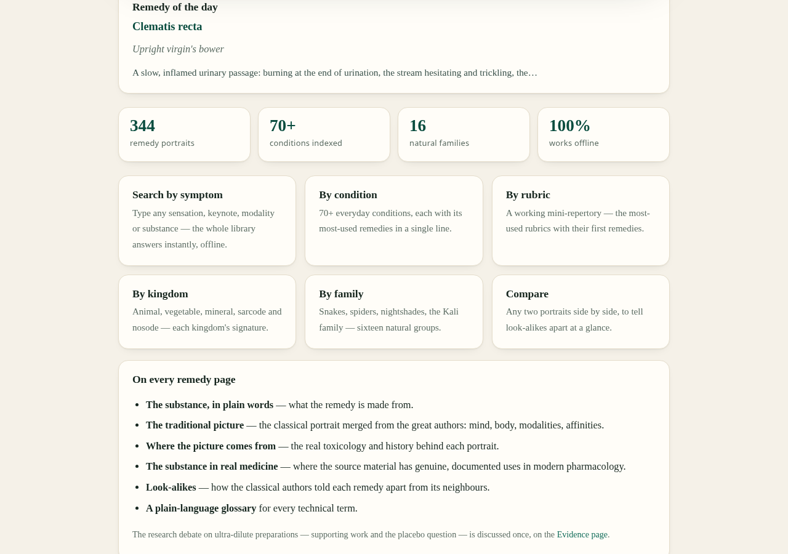

344 remedy portraits
Every page opens with a source illustration and the essence, then runs the same blocks: the traditional picture, where it comes from, the substance in real medicine, look-alikes, and a safety note.
Free · Offline · Open to everyone
344 remedies, open to everyone.
A plain-language materia medica — 344 classical remedy portraits, each set beside the real pharmacology and toxicology of the substance it is made from. A free web edition and an offline Android companion app. No build step, no server, no tracking, no accounts.
Free & fully offline — nothing to install. The Android .apk is sideload-only (allow installs from unknown sources).
Works in aeroplane mode · Educational reference, not medical advice.


Most materia medica flattens three very different kinds of statement into one confident voice. This one refuses to — and the separation is structural, built into the shape of every single chapter.
Every page opens with a source illustration and the essence, then runs the same blocks: the traditional picture, where it comes from, the substance in real medicine, look-alikes, and a safety note.
Classical claim, pharmacological fact and clinical evidence are labelled as the different things they are. A substance's real pharmacology can tell you nothing about the remedy made from it — keeping them apart is the point.
A service worker caches the entire library. Served over HTTPS it installs to a phone's home screen and works with no network at all — in aeroplane mode, on the ward, anywhere.
Offline full-text search across every portrait, 66 conditions with their most-used remedies, a mini-repertory, and a tool to set any two portraits side by side.
Flashcards and self-test over the whole library, a daily-practice quick reference, the remedies by kingdom and family, plus a glossary of the classical terms in plain words.
The companion app bundles this entire site and runs it offline — no network, no server, works in aeroplane mode. One 2.4 MB APK, Android 7.0 and later, no dependencies.
No account, no sign-in, nothing to install if you only want to read. Open it and start.
Load the site in any modern browser — phone, tablet or desktop. The home page is the remedy index: all 344 portraits, one line each.
Use offline full-text search, the conditions index, the repertory, or jump in by kingdom and family. Set any two portraits side by side to compare them.
Every remedy page follows the same shape, so you always know where you are — and which kind of statement you are reading.
The whole library is a static site — what is committed is what is served, and it looks the same offline as it does online.

Read it online, carry it offline on Android, or serve it yourself — the library is a plain folder of static files.
Nothing to install. Open the site in any modern browser and start reading — all 344 portraits, search and tools included.
Open the web editionThe app bundles the whole site and runs offline. One 2.4 MB APK, Android 7.0 and later, no dependencies — no AndroidX, no Compose.
Download the APKNo build step, no server required. Serve the folder with anything, or just open the file — the search index loads as a script.
python3 -m http.server 8080A few things people ask before they start reading.
Yes. The web edition is free to read, and the Android app is free to download. There is no paywall, no subscription and no sign-up.
No account, ever — nothing is tracked and nothing is collected. And once the page has loaded over HTTPS it installs as an offline app, caching the entire library so it works with no network at all.
No. Open Materia Medica is an educational reference. It is not medical advice, and severe, sudden or worsening symptoms need a qualified clinician. The whole point of the design is to keep tradition, pharmacology and evidence visibly separate so nothing is mistaken for a prescription.
The classical portraits are drawn from public-domain editions of Boericke, Clarke, Kent, Allen, Nash and Farrington. The modern pharmacology and the research debate are cited on the references and evidence pages, and each remedy page labels which kind of statement you are reading.
Open to everyone: free access, no account, no tracking, and it runs offline on your own device. The classical sources it draws on are in the public domain and remain free for anyone to use. The original compilation, text and design are the author's copyright — see the licence page in the web edition for the exact terms.
Yes — the web edition is fully responsive, and served over HTTPS it installs to your home screen as a progressive web app. On Android you can also install the companion APK, which bundles the whole library for offline use.